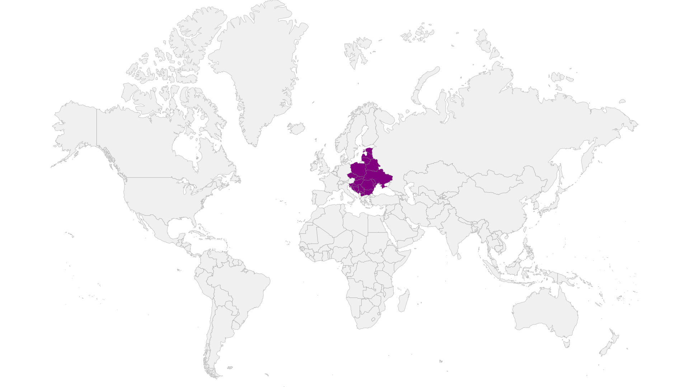
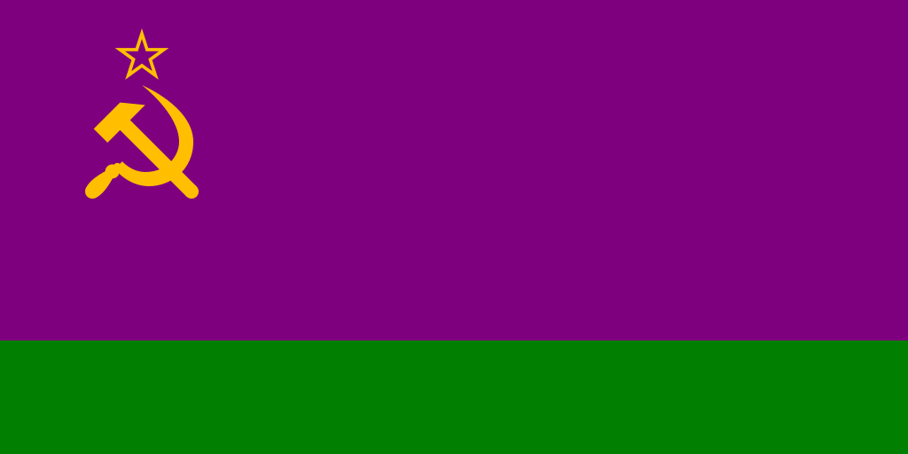
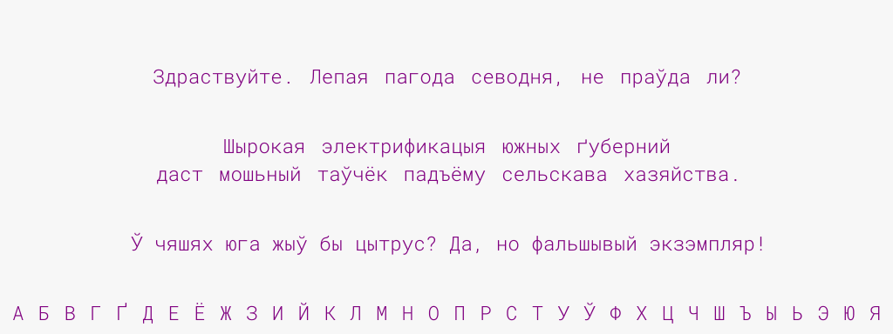

Низкогорская Советская Социалистическая Республика НССР / Низкогория
Является составной частью и основателем Союза Советских Левополитических Республик. Название до момента образования Советского Союза - НГСР, до момента падения монархического строя - Низкогорская Империя. Примечатальные города: Ельград - столица, научный и культурный центр (~3,2 млн), Псов - бытовая промышленность (1,6 млн), София - историческая столица, культурный центр (~1,2 млн), Одесса - рыбная промышленность, морской порт (~1,1 млн), Жданов - рудодобывающая промышленность, рыбная промышленность, морской порт (~1 млн), Корск - транспортная промышленность (~792 тыс), Рига - культурный центр, морской порт (~600 тыс). По площади страна занимает ~1/3 Европы.

Валюта
Советские рубль и копейка
Политический строй
Социализм
Символика
Флаг

Представляет собой полотнище, состоящее из двух вертикально расположенных цветных полос: верхней фиолетового цвета, составляющей 3/4 высоты, и нижней зелёного цвета, составляющей 1/4 высоты флага, с изображением на верхнем левом углу фиолетовой полосы золотых серпа и молота и фиолетовой пятиконечной звезды над ними, обрамленной золотой каймой. У древка вертикально расположен низкогорский национальный орнамент белого цвета на фиолетовом поле, состоящий из 33-ёх полос по горизонтали, включая пробелы, каждая из которых занимает 1/1024-ую от ширины флага. Серп и молот вписываются в квадрат, сторона которого равна 1/4 высоты флага. Острый конец серпа приходится посередине верхней стороны квадрата, рукоятки серпа и молота упираются в нижние углы квадрата. Пятиконечная звезда вписывается в окружность диаметром в 1/8 высоты флага, касающуюся верхней стороны квадрата. Расстояние вертикальной оси звезды, серпа и молота от древка равняется 1/4 ширины флага. Расстояние от верхней кромки флага до центра звезды - 1/8 высоты флага. Отношение высоты флага к его ширине - 1:2.
Язык

Преобладание русов среди населения Низкогории, в том числе революционно активного, определило основу для создания и утверждения официального государственного Низкогорского языка, пришедшего на смену пиджину. Он может быть неотличим на слух от русского, но тем не менее не лишён отличий, как теоретических, так и практических, в связи с тем, что в нём общепринято строго соблюдать чуждые оригиналу парадигмы:
- Произношение определяет письменность, письменность используется для передачи информации в максимально исконном виде.
- Живой язык не стоит на месте в развитии и может принимать новые идеи.
- Запрещён лингво-фашизм - никто не имеет права указывать и заставлять кого-либо говорить и/или писать на родном ему языке только определённым образом.
Следствями этих парадигм является то, что (в сравнении с русским и в общем):
- Язык не считается ни с базовыми русскими правилами (тем более такими традиционными как [жы] / [шы] > ЖИ / ШИ, [ж] / [ш] > ЖЬ / ШЬ, [цца] > ТСЯ / ТЬСЯ), ни с какими другими, а приемлет только рекомендации, из которых главная - писать буквы и расставлять знаки препинания соответственно своему личному произношению.
- В алфавите не используются избыточные (неуникальные по звучанию) буквы, такие как Щ, в то же время не порочится Ё и есть место буквам или звукам из других алфавитов. В число таких внедрений входят согласная Г / Ґ > [ɣ] / [g], гласный/полугласный У / Ў > [u] / [w] и смягчённый вариант Ц.
- Имеется официальный стандарт (для удобства), и множество других стилей, засчёт широкой вариативности комбинаций особенностей произношения (а в результате и написания).
-
Для сокращения письма, в ходу применение спец. символа - апострофа '. Он служит для отделения падежных окончаний от чисел, и для обозначения дубля предыдущей буквы (с учётом регистра) или себя - 16'ЫЙ > [шэснаццатый], ЛУН'ЫЙ > [лунный]. Рекомендован к использованию везде, кроме аббревиатур.
Смягчение всегда распространяется на всю последовательность (одинаковых) согласных, созданную с помощью апострофа. Так Н'Ь > [н'н'], или С'''Я > [с'с'с'с'а], но ЗЗЮ > [зз'у].
- Установка на фонетичную орфографию относится ко всему, но стандарт придерживается некоторых исключений, предполагая в них чтение отличное от написания. То бишь: cмягчённый согласный Ж / Ш > [ж'ж'] / [ш'ш'], согласный Ч перед твёрдой Ж / Ш - [ч], в англицизмах Е > [э].
- Йотированный гласный Е / Ё / Ю / Я, стоящий после гласного, но не перед Д, при чтении разрешается произносить так же, как после согласной (с полным отсутствием йотации) - ТАКОЕ > [такоэи], ВНИМАНИЕ > [вн'иман'иэи], ЦЭЛЕ' > [цэл'эиэи], ТЕРЯ' > [тер'аиаи], КЛЮ'Т > [кл'уиуит], ТЕ'РЬ > [тэиэир'], ТЕЯ > [т'эиаи], ЗМЕ''Д > [зм'эиэий'эид].
Словарь
Все официально существующие русские словоформы + Нижеперечисленные: Устаревшие + Нелитературные (разговорные) + Альтернативные из родственных языков + Искусственные.
Слова, пересекающиеся по звучанию (не считая деталей произношения) с русскими, следует считать их функциональным расширением.